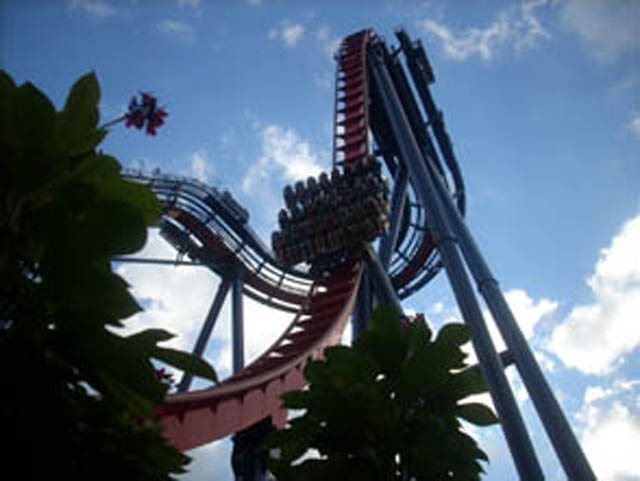
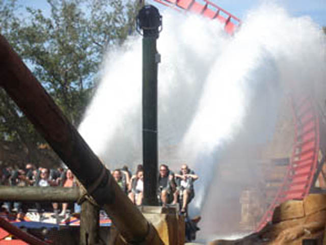

| |
Sheikra Review

For today's review, we are heading to Busch Gardens Tampa to review Sheikra. Once you board the bigass rows, you take your seat and pull down the OTSR. The seat is fairly high up due to the elevated seating for the fact that it's a dive coaster. Once we get our restraints checked by the ride operators, say goodbye to the floor and away we go! We roll through a turn out of the station and head straight for the lifthill. Now on most coasters, the lifthill isn't that steep and it's just a climb up to the top. However, Sheikra's lifthill is about as steep as the drop on a normal coaster. So you're pretty much facing the sky while you're climbing the sky and you can definetly tell that it is steeper than the average lifthill. If you look hard enough, you can see downtown Tampa from the lifthill. Then we crest the top of the lifthill. We creepily roll around the turn at a pretty slow pace. You get a lovely view of the trees and the sky as we roll through the turn. Now I know for the general public, this is terrifying because a general public peep is thinking "OMG!!! THE ANTICIPATION IS KILLING ME!!! JUST LET ME GET IT OVER WITH!!!" But me, I just enjoyed the view and relaxed. Then it appears that we've met a dead end. This gives many gullible people the illusion that the car is going to fly off the track like in RCT3 when you open an uncompleted coaster and it falls off the tracks and all the guests scream "OH NO!!!" and then it creates a random explosion at the bottom and destroys the cars, but all the people end up perfectly unharmed. Stupid RCT3. Can't even kill off the peeps unlike in RCT1 & 2. But anyways, back to Sheikra. We stop right at the base of the first drop. Leaning over, just ready to fall. I'm sure in the front row, it gives you one hell of a view. Once again, my god damn laziness got the best of me and I rode in the very back every single time I rode. Stupid Laziness. And then, it happens. We go over the edge. Now there was a plus side to my constant back seat riding in Sheikra. I got some very tasty airtime going over this drop. Now it's not Coaster airtime, but it's still pretty damn strong and pretty damn fun. But before we know it, we are flying at 70 mph and are about to soar into an Immelmann. Now you saw this Immelmann from the line and probably thought "Damn! That's one big inversion!" Unfortunetly, it's not that forceful. It's very much like Silver Bullet's Heartline Spin. Though Sheikra has an excuse due to the nature of the 8 seat rows. So it can't handle too many inversions. After rising upsidedown, we fall out of the Immelmann and twist straight up into the mid course brakes. We roll off the mid course brakes and into the second vertical drop. While this vertical drop isn't nearly as big as the first one, you have to admit that it still has some nice airtime, plus on this one, you get the deeling of dropping into a tunnel. Anyways, we roar straight out of the tunnel and into a turnaround. While nothing special, this turnaround is still fun. And now it's time for the grand finale. The Water Splash. While it's awesome for filming, it does nothing but act as a giant set of trim brakes on the ride. We then use the rest of our speed to make it up the hill. Then we go through a big long turn to enjoy some speed before it all gets sucked away by the final brake run. While it's not the most intense experience ever, Sheikra is an awesome coaster and I'd totally recommend riding it if you're at Busch Gardens Tampa.
8/10
Location: Busch Gardens Tampa
Opened: 2005
Built by: B&M
Last Ridden: November 19, 2007
Sheikra Photos








Home
|